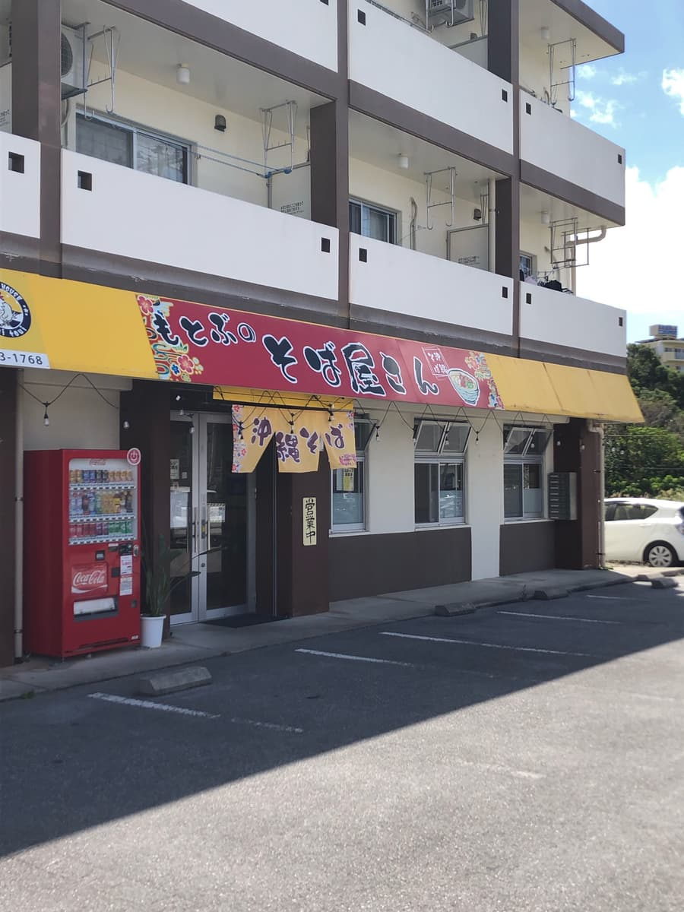
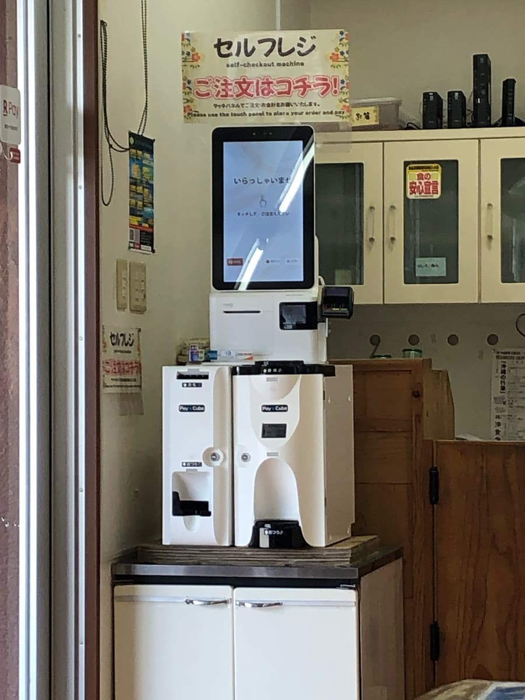
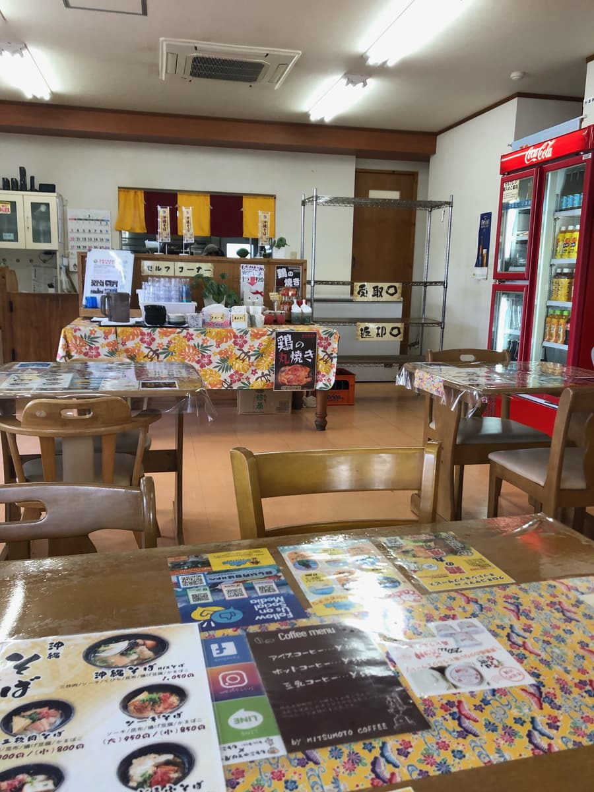
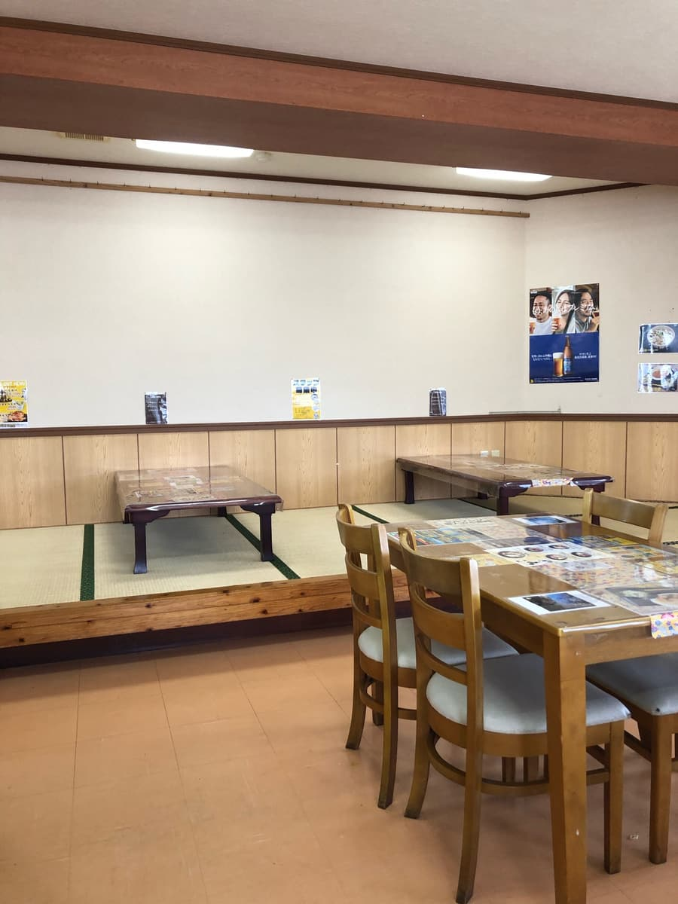
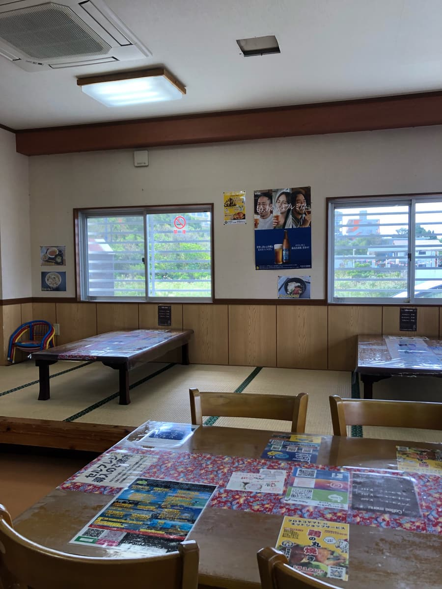
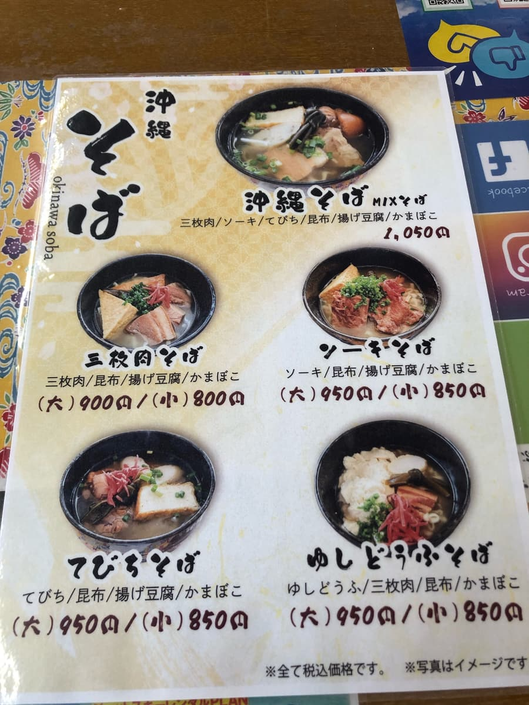
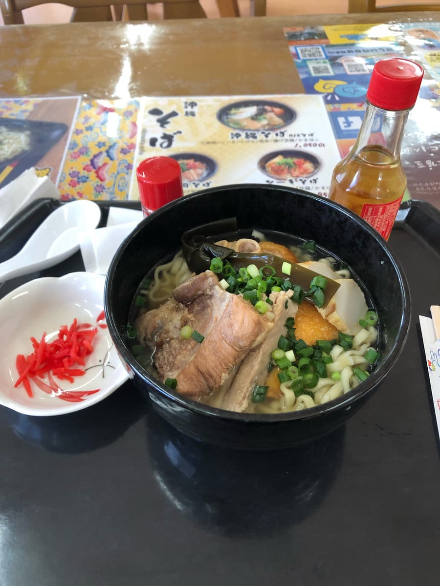
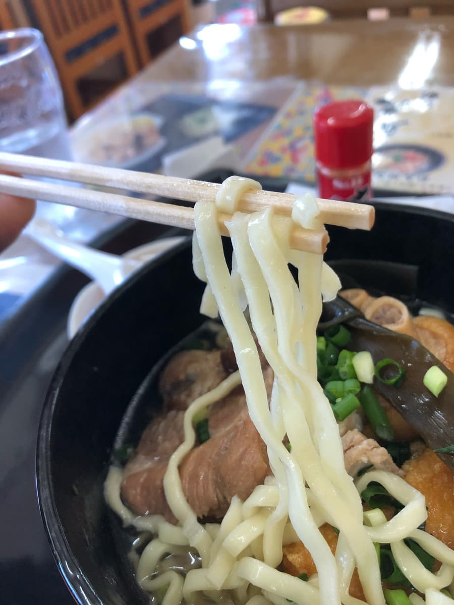
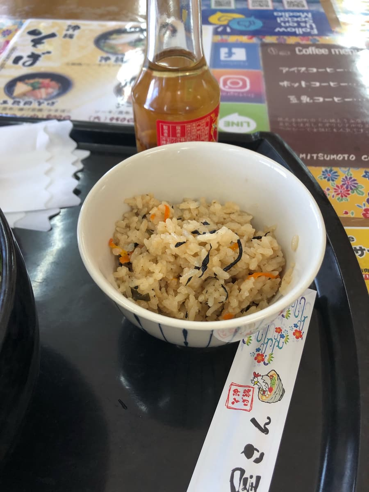

2024.3に食べに行きました😄

平日のお昼時に来ましたが、空いている感じです😁

店内に入ると、自分が一番客でした😄 入口付近にセルフレジも設置され、キャッシュレス対応で良いなと思いました。




ここまでほぼ店員と無接触です😄 店員の皆さん、厨房にこもっているようで、完全に注文、席選びまでセルフです。
メニュー表の中から、一番オススメと思われる、一番上に掲載の「沖縄そば（MIXそば）」を注文することに😆

MIXそば来ました😁 三枚肉、本ソーキ、てびち、結び昆布、揚げ豆腐、かまぼこが乗った全部乗せの沖縄そばですねｗｗ
まずはスープを味わいます。あっさりの豚骨出汁ベースが効いてますね。
各具材もあっさりな感じで優しい味です😄

次に麺をいただきます。麺は中太タイプのストレートです。柔らかい感じですね😄
今回単品のＭＩＸそばを注文したのですが、店員さんから「良かったらジューシーも食べますか？」と聞かれたので「ありがとうございます😄」と回答。

ジューシーもあっさり系ですね。
評価（9点/15点）：海洋博公園（美ら海水族館）の近くの沖縄そば屋です。観光で北部地域・本部半島に来たときに一度は如何でしょうか？普通に美味しい感じです。
麺 ：★★★☆☆（3）
スープ：★★★☆☆（3）
具 ：★★★☆☆（3）